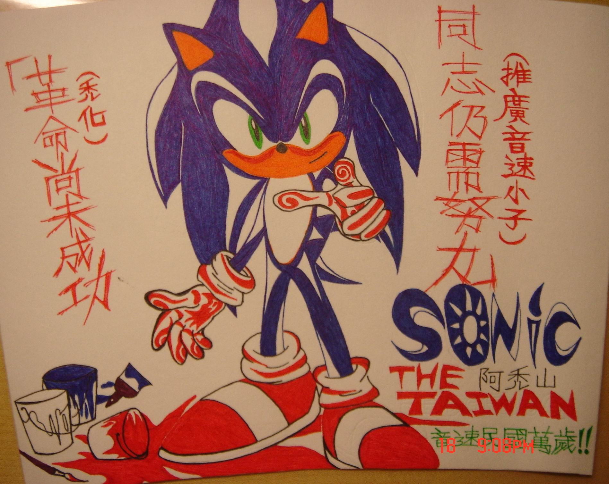
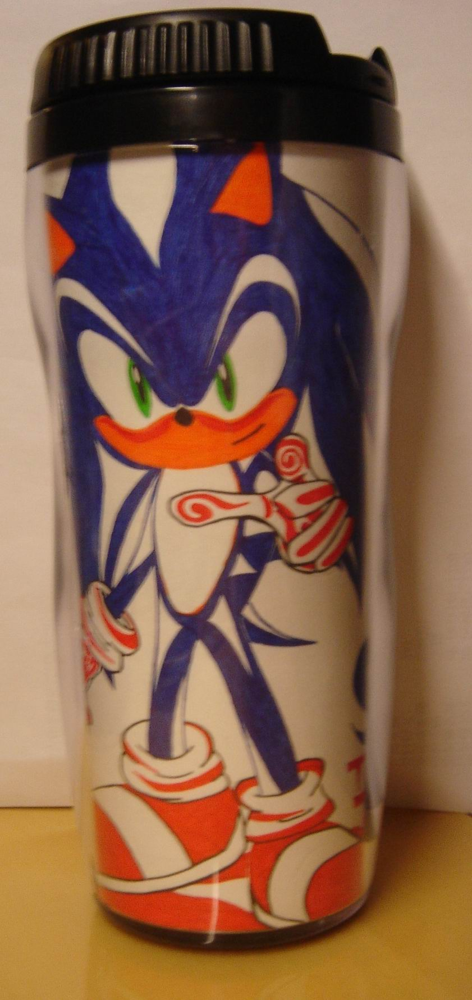
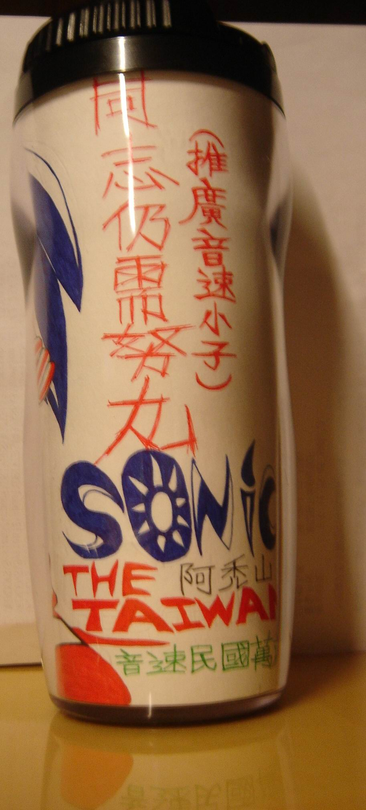
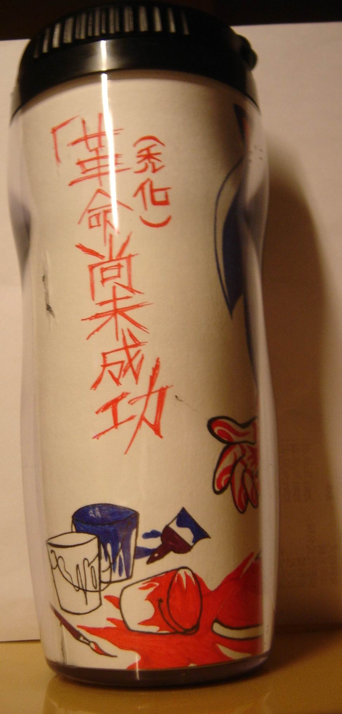

🏠 首頁
📁 同人畫作作品區
Sonic The Taiwan－阿禿山
👤 willnazo
🕐 2009-11-22 00:17:40

附件: Sonic The Taiwan.jpg
國父 阿禿山有言：
「革命(禿化)尚未成功，同志(Fans)仍須努力(推廣音速小子)。」
This is Sonic The Taiwan. 音速民國萬歲！
其實這是高二的第二個美術作業-保溫瓶
將圖畫完後，就放進保溫瓶的外圍。

附件: 美術作業-保溫杯.jpg

附件: 美術作業-保溫杯2.JPG

附件: 美術作業-保溫杯3.JPG
👤 acq445
🕐 2009-11-22 01:40:11
真希望台灣流行音速小子,這樣不知道有多好=ˇ=
👤 binyi
🕐 2009-11-22 07:10:38
不錯的創意, 花紋剛好配合禿掉的某塊
NAZO有美術課真好, 我也好想做一些東西 [:baozi18:]
👤 orzilovepm
🕐 2009-11-23 13:26:50
咦？
所以是把＂青天白日＂畫在阿禿身上囉？
酷耶～ O.o
油漆傾倒的感覺非常有意思～～
阿禿手套特別加上去的條紋圖騰也更加深阿禿的帥氣感！
包在保溫杯外放在學校用的感覺就是會格外吸引人注目 ＝u＝＋